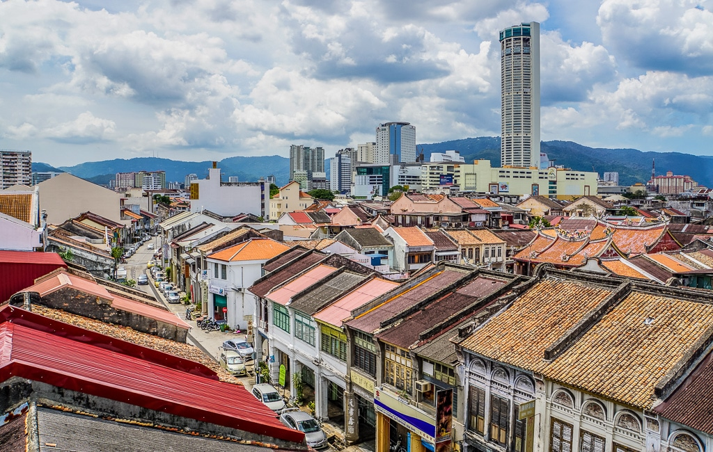
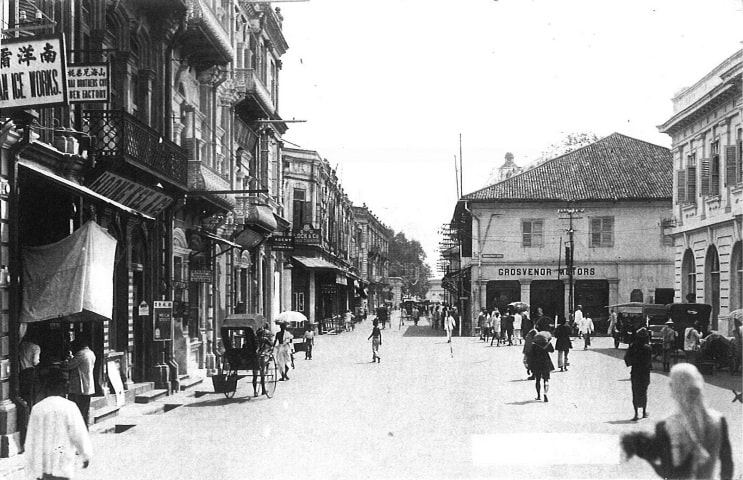
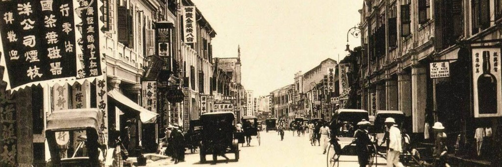

Penang is known for its rich heritage and architecture, its vibrant multicultural society, a wide range of modern entertainment and retail choices, natural features such as beaches and hills, and the world-famous Penang cuisine. Penang is a Malaysian state located at the northwest coast of Peninsular Malaysia, by the Malacca Straits. Penang consists of two parts: Penang Island, where the capital city, George Town, is located, and Seberang Perai on the Malay Peninsula. Penang is the second smallest Malaysian state by land mass.
About Penang
History Of Penang
The history of Penang was shaped by British colonialism, beginning with the acquistion of Penang Island from the Sultan of Kedah by the British East India Company in 1786. Penang was founded by Sir Francis Light because he was instructed by the British East India Company to establish trade relations in the Malay Peninsula. Penang is a strategic location in the Malacca Straits as it would serve as a "convenient magazine for trade". The capital state of Penang is called George Town. After getting Penang, Penang was governed as part of the Straits Settlements together with Malacca and Singapore. During World War 2, Penang was under the Japanese occupation from 19 December 1941 - 3 September 1945. Under the Japanese occupation, many lives were lost due to food shortages and killed by Japanese soldiers. The Japanese targeted mainly Chinese people living in Penang due to the scornful views between the Japanese and Chinese people. When World War 2 ended, George Town was the first city to be liberated by the British.
Fun Facts About Penang
- The state capital, George Town was named after King George III, who ruled the British Empire between 1760 and 1801.
- The name Penang comes from the modern Malay name Pulau Pinang, which means The Island of the Areca Nut Palm.
- The name Penang comes from the modern Malay name Pulau Pinang, which means The Island of the Areca Nut Palm.
- The state of Penang is also called as the Pearl of the Orient and Pulau Pinang Pulau Mutiara.
- Penang island was originally known by native seafarers as Pulau Ka-Satu, meaning The First Island, because it was the largest island encountered on the trading sea-route.
Table of Penang History
| Historical affiliations | Period |
|---|---|
| Kedah Sultanate | 1136-1786 |
| British East India Company | 1786-1867 |
| Straits Settlements | 1826-1941; 1945-1946 |
| Empire of Japan | 1941-1945 |
| Malayan Union | 1946-1948 |
| Federation of Malaya | 1948-1963 |
| Malaysia | 1963-Present |
This is the table of Penang historical affiliations alongside with the timeline.
Awards
To know more about the awards, recognition and accolades of Penang,